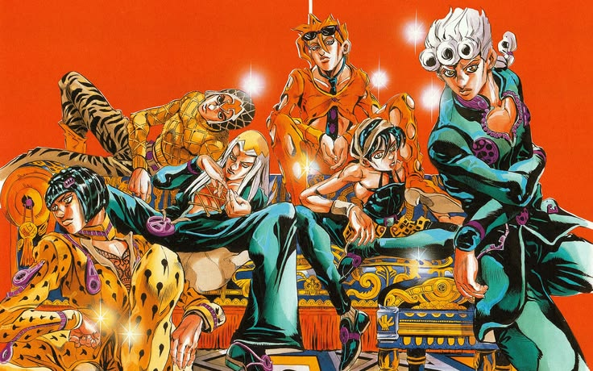
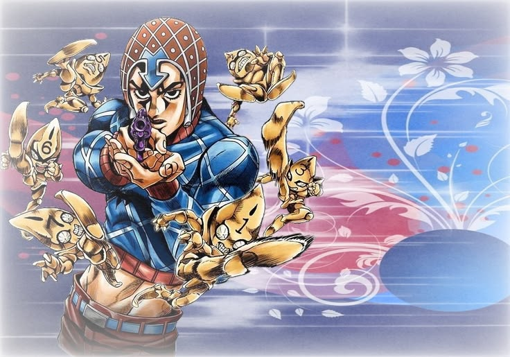
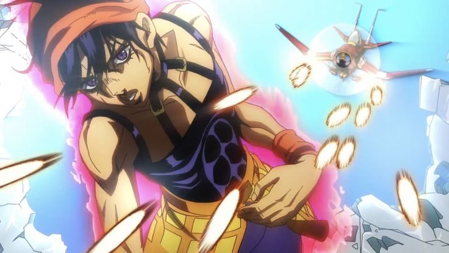
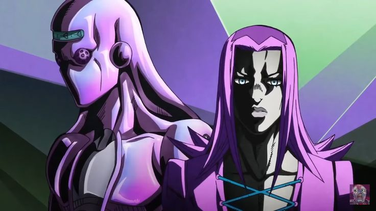
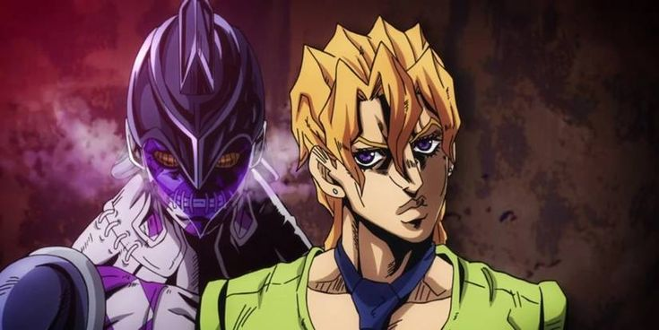
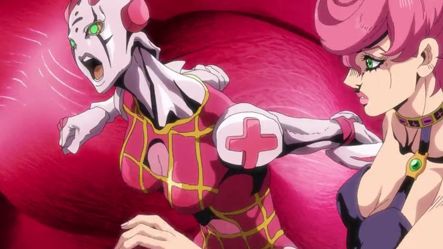

Giorno Giovanna
Atual chefe da (maior) gangue italiana: passione
Sobre mim
Foto em familia (e inimigos)

"(MINHA) familia joestar"

Passione(Grupo principal)
Nas sombras das belas cidades italianas, uma poderosa organização criminosa chamada Passione controla as ruas. Enquanto o medo e a corrupção se espalham, um jovem chamado Giorno Giovanna sonha com algo impossível: subir ao topo da máfia para transformá-la por dentro. Ao ingressar na Passione, Giorno se une à equipe liderada por Bruno Bucciarati, um homem guiado por um forte senso de justiça. Ao seu lado estão Leone Abbacchio, Guido Mista, Narancia Ghirga e Pannacotta Fugo, cada um com seu próprio passado, suas cicatrizes e sua determinação. O que começa como uma simples missão de escolta logo se transforma em uma luta desesperada contra o próprio líder da organização. Perseguidos por inimigos cada vez mais perigosos, o grupo atravessará toda a Itália enfrentando usuários de Stand com habilidades extraordinárias e batalhas onde um único erro pode significar a morte. Ao longo dessa jornada, amizades serão fortalecidas, sacrifícios serão feitos e o destino colocará à prova a coragem de cada membro da equipe. No centro de tudo está a ambição de Giorno: criar um mundo melhor, mesmo que para isso seja necessário desafiar o homem mais poderoso da Passione. Esta é a história de jovens que desafiaram o destino, enfrentaram o impossível e deixaram sua marca para sempre.

Bruno Bucciarati
Bruno Bucciarati é um dos membros mais respeitados da organização Passione e líder de um pequeno grupo de agentes que atua nas ruas de Nápoles. Diferente de muitos mafiosos, ele possui um forte senso de justiça e se preocupa genuinamente com as pessoas ao seu redor. Sua coragem, inteligência e capacidade de liderança fazem com que seus companheiros confiem nele incondicionalmente. Ao longo da história de JoJo's Bizarre Adventure: Golden Wind, Bruno se vê diante de escolhas que colocam seus ideais à prova. Ao perceber a corrupção e a crueldade que cercam a organização à qual pertence, ele decide lutar por um futuro melhor, mesmo sabendo dos perigos que isso trará. Junto de seus aliados, embarca em uma jornada repleta de batalhas, perseguições e sacrifícios, enfrentando inimigos cada vez mais poderosos. Com seu Stand, Sticky Fingers, Bruno demonstra grande habilidade em combate, mas sua verdadeira força está em sua determinação e no desejo de proteger aqueles que considera sua família. Durante toda a aventura, ele atua como o pilar do grupo, guiando seus companheiros pelos momentos mais difíceis e inspirando-os a seguir em frente. Assim, Bruno Bucciarati se torna muito mais do que um simples integrante da máfia: ele é um líder admirável, um amigo leal e um símbolo de coragem na busca por um mundo melhor.

Guido Mista
Guido Mista é um dos integrantes mais confiáveis do grupo liderado por Bruno Bucciarati. Conhecido por sua personalidade descontraída, seu bom humor e sua lealdade inabalável, ele está sempre disposto a enfrentar qualquer perigo para proteger seus companheiros. Apesar de agir de forma impulsiva em alguns momentos, Mista possui grande coragem e um forte senso de amizade, tornando-se uma peça fundamental nas missões do grupo. Durante a jornada de Golden Wind, Mista participa de inúmeras batalhas contra usuários de Stand extremamente perigosos. Sua habilidade de combate é complementada por seu Stand, Sex Pistols, formado por seis pequenas entidades capazes de redirecionar a trajetória de suas balas. Graças à excelente pontaria e à criatividade de Mista, essa habilidade se torna uma arma mortal mesmo nas situações mais difíceis. Por trás de sua atitude despreocupada, existe alguém que valoriza profundamente seus amigos e que está disposto a arriscar a própria vida por eles. Sua confiança em Bucciarati e em seus companheiros o impulsiona a continuar lutando, mesmo quando as chances de vitória parecem mínimas. Ao longo da história, Guido Mista demonstra que a verdadeira força não vem apenas do poder de combate, mas também da determinação de permanecer ao lado daqueles em quem acredita. Com sua coragem, lealdade e espírito inquebrável, ele se torna um dos membros mais importantes e carismáticos do grupo que busca mudar o destino da Itália.

Naranchia Chirga
Narancia Ghirga é um dos membros mais jovens do grupo de Bruno Bucciarati e também um dos mais enérgicos. Sua personalidade impulsiva, sincera e explosiva faz com que ele frequentemente aja antes de pensar, mas por trás de sua aparência rebelde existe alguém de coração bondoso que valoriza profundamente seus amigos. Antes de entrar para a Passione, Narancia teve uma vida difícil, marcada por abandono, injustiças e solidão. Foi graças à ajuda de Bucciarati que ele encontrou um propósito e um lugar onde pudesse ser aceito. Desde então, passou a enxergar o grupo como sua verdadeira família, demonstrando uma lealdade inabalável a seus companheiros. Em combate, Narancia utiliza o Stand Aerosmith, um pequeno avião armado com metralhadoras e bombas que pode perseguir inimigos à distância e detectar a presença de pessoas por meio da emissão de dióxido de carbono. Embora pareça simples à primeira vista, essa habilidade se mostra extremamente perigosa quando combinada com a determinação e a coragem de seu usuário. Ao longo da jornada de JoJo's Bizarre Adventure: Golden Wind, Narancia amadurece enquanto enfrenta desafios cada vez maiores. Mesmo diante do medo e da incerteza, ele continua lutando para proteger aqueles que ama e para ajudar seus amigos a alcançarem seus objetivos. Com sua energia contagiante, sua lealdade e sua coragem, Narancia Ghirga se torna um dos membros mais queridos do grupo, representando a força de alguém que, apesar das dificuldades do passado, nunca deixou de seguir em frente.

Leone Abbacchio
Leone Abbacchio é um dos membros mais experientes do grupo de Bruno Bucciarati. Reservado, sério e muitas vezes intimidador, ele raramente demonstra seus sentimentos, preferindo manter distância dos outros. No entanto, por trás de sua postura fria existe um homem marcado por arrependimentos e determinado a encontrar um novo propósito para sua vida. Antes de ingressar na Passione, Abbacchio trabalhou como policial. Porém, após uma série de acontecimentos que abalaram sua confiança na justiça e em si mesmo, ele acabou abandonando esse caminho. Foi ao conhecer Bucciarati que encontrou uma nova razão para seguir em frente, depositando nele uma confiança que dificilmente concederia a qualquer outra pessoa. Seu Stand, Moody Blues, possui a habilidade de reproduzir acontecimentos passados, permitindo reviver ações e movimentos de pessoas e objetos com extrema precisão. Embora não seja um Stand voltado para combate direto, sua capacidade de investigação torna Abbacchio uma peça indispensável para o grupo, ajudando a desvendar mistérios e rastrear inimigos. Durante a jornada de *JoJo's Bizarre Adventure: Golden Wind*, Abbacchio demonstra uma lealdade inabalável aos seus companheiros. Mesmo mantendo sua personalidade rígida e desconfiada, ele está disposto a enfrentar qualquer perigo para cumprir sua missão e proteger aqueles que lutam ao seu lado. Assim, Leone Abbacchio se destaca como um homem que carrega o peso do passado, mas que continua avançando em busca de redenção, tornando-se um dos pilares mais importantes do grupo de Bucciarati.

Pannacotta Fugo
Pannacotta Fugo é um dos integrantes mais inteligentes do grupo de Bruno Bucciarati. Dono de uma mente brilhante e de um grande conhecimento acadêmico, ele se destaca por sua capacidade de analisar situações rapidamente e encontrar soluções para problemas complexos. Apesar disso, sua personalidade é marcada por explosões de raiva repentinas, revelando um lado impulsivo que contrasta com sua inteligência. Desde jovem, Fugo demonstrou habilidades intelectuais excepcionais, mas dificuldades em controlar suas emoções acabaram influenciando seu caminho na vida. Ao encontrar Bucciarati, ele passou a fazer parte de um grupo onde finalmente encontrou companheiros em quem podia confiar e por quem desenvolveu um forte sentimento de lealdade. Seu Stand, Purple Haze, é considerado um dos mais perigosos da história. Através de cápsulas presentes em seus punhos, ele libera um vírus mortal capaz de destruir qualquer ser vivo em poucos instantes. Porém, devido ao enorme poder e à dificuldade de controlar essa habilidade, Fugo precisa agir com extrema cautela sempre que entra em combate. Ao longo de *JoJo's Bizarre Adventure: Golden Wind*, Fugo é retratado como alguém que vive dividido entre a razão e a emoção. Suas decisões refletem seus medos, suas dúvidas e sua forma pragmática de enxergar o mundo, tornando-o um personagem complexo e diferente dos demais membros do grupo. Assim, Pannacotta Fugo representa a inteligência, o conflito interno e o peso das escolhas difíceis, ocupando um papel único dentro da jornada do grupo de Bucciarati.

Trish Una
Trish Una é uma jovem que, de repente, se vê envolvida em uma perigosa disputa dentro da organização Passione. Inicialmente insegura e acostumada a depender dos outros para sua proteção, ela é colocada sob os cuidados do grupo de Bruno Bucciarati, que recebe a missão de escoltá-la em segurança por toda a Itália. No início da jornada, Trish demonstra uma personalidade forte e, por vezes, mimada, resultado de uma vida relativamente protegida e da falta de conhecimento sobre o mundo violento que a cerca. Entretanto, à medida que enfrenta situações cada vez mais perigosas, ela começa a amadurecer e a desenvolver uma coragem que nem ela mesma sabia possuir. Seu Stand, Spice Girl, permite tornar objetos macios e elásticos, alterando suas propriedades físicas de maneiras criativas e inesperadas. Com o tempo, Trish aprende a utilizar essa habilidade de forma eficiente, deixando de ser apenas alguém que precisa ser protegida para se tornar uma importante aliada nas batalhas do grupo. Durante os acontecimentos de *JoJo's Bizarre Adventure: Golden Wind*, Trish passa por uma grande transformação pessoal. Cercada por companheiros que arriscam suas vidas para protegê-la, ela encontra a força necessária para enfrentar seus medos e lutar pelo próprio destino. Assim, Trish Una deixa de ser apenas o alvo de uma missão e se torna uma verdadeira integrante da equipe, demonstrando coragem, determinação e crescimento ao longo da jornada que mudará sua vida para sempre.